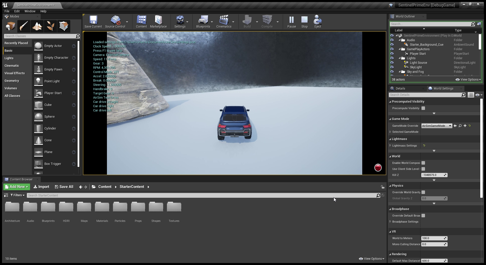
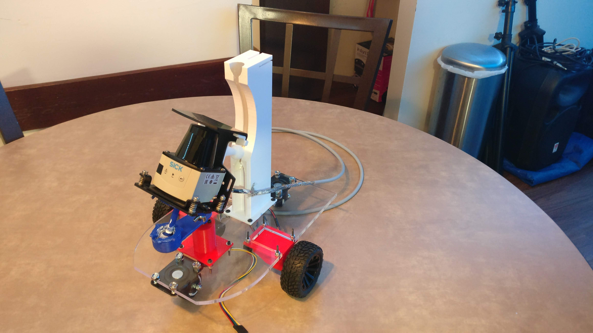
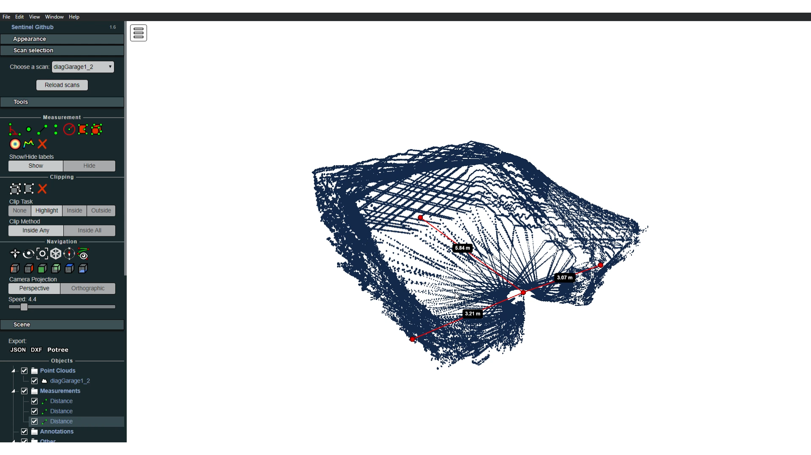
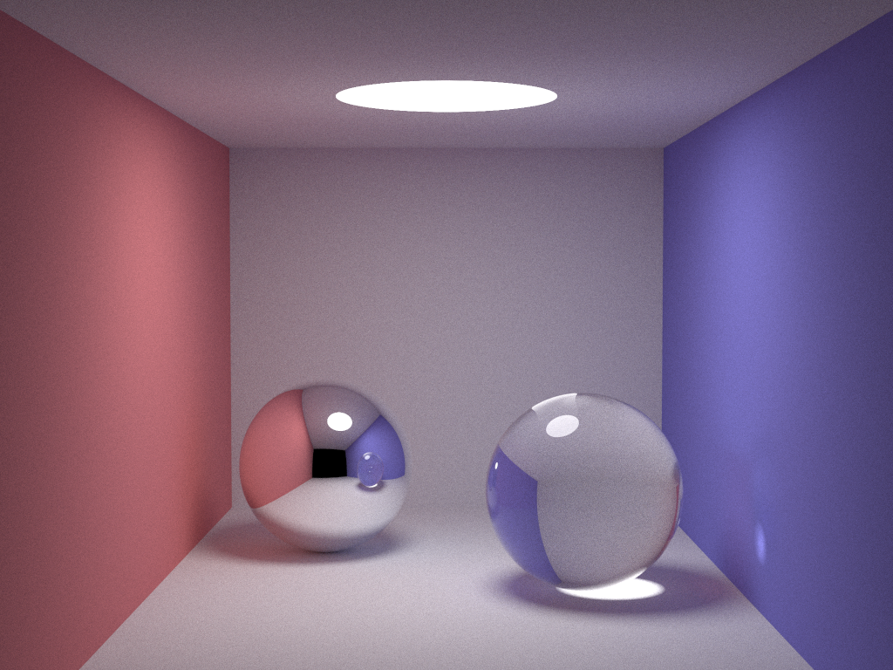
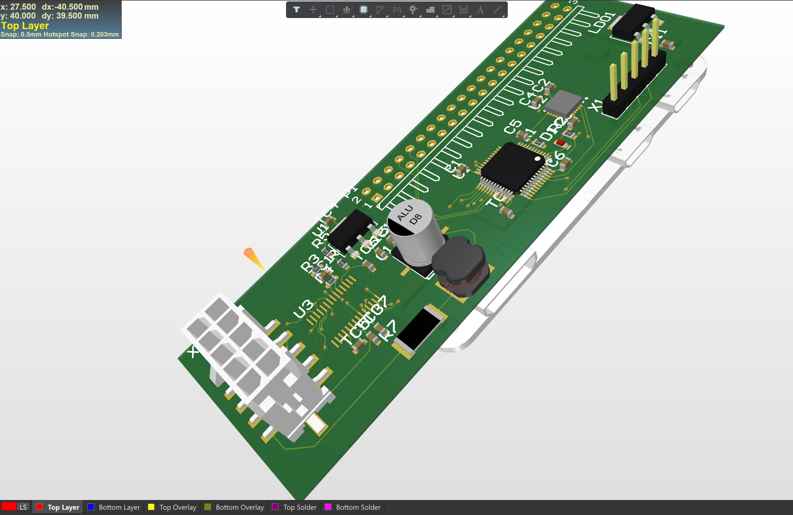
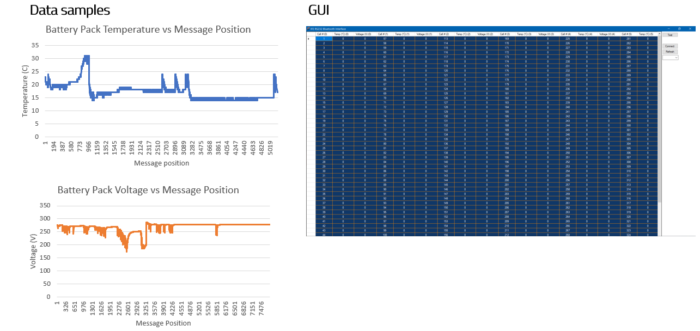
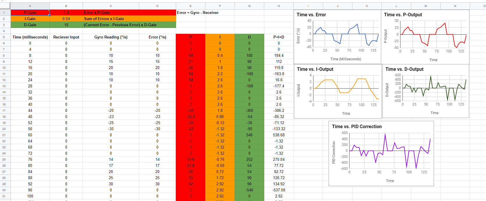

Projects
A collection of projects and competitions that I am very proud of, presented in reverse chronological order.
Sentinel Prime
A continuation of Project Sentinel, further exploring Sentinel's potential
2020 - Ongoing: In progress
Project Sentinel taught me a lot. The project was ambitious because of how difficult the algorithms involved were. I have only had conceptual exposure to SLAM and Kalman filters, and these were crucial to Sentinel's operation. The idea was still extremely interesting, so I have still decided to pursue it. However, this time, I will trying to figure out the algorithm first. The current plan is to use a physics plugin and model Sentinel. The plugin allows me to define the robot using kinematic models and control it using code. This will allow for a robust testbench where the SLAM algorithm and Kalman filter can hopefully be figured out and tuned. From here, it shouldn't be too hard to port this over to actual hardware.
The plugin used is Microsoft AirSim. This plugin allows for Python code to be run that controls the model (in this case, we can only control a model made by Microsoft, which is a car). Unreal Engine shows the results of the simulation. I loaded a custom environment into Unreal and have been using that for initial testing. From here, I will use the LIDAR APIs provided by Microsoft to simulate Sentinel in the field, and hopefully tune the filters and algorithms needed.
Screenshot of Unreal Engine in the middle of a simulation
Project Sentinel
TiM $10K Challenge Competition Entry as well as my academic research project.
2019 - 2020: Completed
The TiM $10K Challenge is an annual competition hosted by SICK. Inc, a German company that manufactures sensors for factory and logistics automation. The goal of the competition is rather vague and open-ended: Simply use the TiM781, a 2D LIDAR sensor, in any application. For this competition, I teamed up with my friend (who is a Mechanical Engineer), and we came up with the idea for Project Sentinel: an autonomous robot that is designed to become a part of a security team and detect intruders in an indoor environment. The robot houses a novel mechanism that rotates the 2D sensor in 3-dimensions and is able to accurately reproduce 3D environments. Once the environment is scanned, the plan was to feed the data into a Kalman Filter to track detected objects in the environment. The robot would use a SLAM algorithm to map the environment. Unfortunately, the complexity of the algorithm and the time constraint of being a full-time student in college led to the algorithms never being finished. Even though we did not place in the competition, we were extremely proud of the progress we made.
Video summarizing Project Sentinel
The robot's mechanism was designed by my partner. There was an inexpensive MPU-6050 accelerometer, which was used to correctly orient the LIDAR data in 3D space. The robot's ambulation was controlled by 2 motors and the robot mechanism was controlled by its own motor. These were all programmed using an Arduino UNO and a PID algorithm was tuned to rotate the mechanism in a smooth manner. The accelerometer was not plugged into the Arduino for the simple reason that the rest of the robot maxed out the number of available interrupt pins. The LIDAR sensor was connected to a Raspberry Pi 3, since the primary communication port was Ethernet. Additionally, the Raspberry Pi has WiFi capabilities built in, so it would be easy to upload the data.

Project Sentinel in all his glory
The controller code for the sensor was written in Python 3. Once the data was captured, it was uploaded to AWS DynamoDB. A separate script converted the raw data to the .las format, which allows it to be interpreted by LIDAR software. From here, it was uploaded to an S3 bucket. I coded an Electron app that could view the scans on S3, complete with measurement tools and the ability to search through scans. Since this was coded on Electron, the app was cross-platform, being able to be viewed on Windows, Mac OS, and Linux.

Screenshot of Electron visualizer
Simple Raytracing
Final Project for ECE 408: Applied Parallel Programming
Spring 2020: Completed
I took ECE 408 in my spring semester junior year. The final project for the course was to take multithreaded, sequential raytracing code and drastically speed it up by using CUDA on GPUs. The actual background for the raytracing algorithm is a bit involved, but it involves approximating the rendering equation. The algorithm is a bit simplified so that it was able to be completed in a few weeks, but this meant that it only works with spheres.
The final code was tested on the school's GPU cluster (TITAN V GPUs) as well as my personal GPU (Nvidia 2060 Super), and we were able to achieve an incredible speedup. We did this by using concepts such as downsampling (give the algorithm less samples to work with), depth constraining (Limiting the number of ray bounces), and reducing global memory accesses. The results are summarized below. The algorithm was given the description of spheres in the scene (size, location, and material) and output the image.

Raytracing output
Project Watchdog
This is a simple hero unit, a simple jumbotron-style component for calling extra attention to featured content or information.
Project WatchDog was our entry into the innovateFPGA competition. The competition gives an FPGA, and asks to develop something on it related to AI. Bolstered by our success with Project LD, we decided to pursue a similar project for the competition: A real time smart home security camera. There are several security cameras that exist in the market, but the key with this one is that it would be able to detect anything (pets, people, objects) and would also not require the internet. The cameras that exist in the market stream the entire camera footage to external servers for parsing, but this would serve as an edge device, accelerated by an FPGA.
The plan was to pass the data from a camera to the FPGA. From there, a neural net trained to classify objects, people, and animals would be running on the FPGA, and from there would send the classification via Ethernet to a home server. This way, the amount of data communicated from the FPGA would be much lower than sending video frames over the internet. Unfortunately, time constraints (we both had full time internships) led to us not having enough time for the neural net, which made our project a failure. However, it was an extremely valuable learning experience.

Messing around with OpenCV for Project Watchdog
Project LD
Dynamic, real time motion tracking accelerated by an FPGA
After taking ECE 385, my interest in FPGAs and hardware acceleration has been peaked. Project LD is our attempt at Augmented Reality (AR) assisted beer pong (minus the beer). The project is named "Project LD", which is short for "Projects Legends Never Die", which is a nod to our professor, whose profile picture on our class website is the "Legends Never Die" meme. The goal was to track a bouncing ping pong ball using a camera in 3-dimensions in realtime and then superimpose the path of the bouncing ball on the video feed as well as superimpose the path that should have been taken to get the ball into the cup. We were able to get a successful 2D track of the ball's position and scale, but did not have time to work on the 3D track. For this project, we used the DE2-115 expansion board with the Altera Cyclone IV E FPGA. We were provided with the 1.3 megapixel camera module, and spent a majority of the project interfacing the camera with the FPGA. By the end of 2 weeks, we were able to have a fully functioning 1.3 megapixel camera outputting its feed via VGA to a computer monitor. In addition, we were able to interface the NIOS II E microcontroller as a System-on-chip to toggle the camera settings. We made heavy use of exposure, red gain, blue gain, and green gain settings to achieve the best picture quality we could. The tracking was done very similar to how the visual effects software Adobe After Effects achieves its 2D motion track: In After Effects, you choose the point you want to track, and it generates a small box on the screen. Frame-by-frame, it then tracks the change in position and scale by looking at the change in high contrast points within the box. We made an FPGA-module to do the exact same thing, except in realtime. It worked rather well, but could not keep the track if the ball was dropped. The reason for this is we need to add a module that accomplishes frame interpolation. Since a falling ball falls very fast relative to the frame, comparing the frame before the drop to the frame after the drop will show a large vertical change between frames. Frame interpolation will guess where the ball would have been between the frames, and would allow for a much better track.
The last leg of this project would have been exploiting constraints to get a 3D motion track with one camera. There are a few additional things we would have to do.
Here is a compilation of our progress through this project.
Project HackMe
Award-winning noninvasive EEG headset proof of concept
February 2019
Every year, UIUC holds a competition called a Hackathon. The hackathon is a 36-hour competition where the competitors are asked to design (usually code) anything. At the end of the 36 hours, the results are judged based on merit and usefulness of the submissions. One of my friends has always had an interest in the concept of Electroencephalography (EEG waves). While usually used for diagnosing brain disorders (such as epilepsy and seizure-related disorders), there is actually much more information that can be gleaned from these EEG waves - and this premise is where Project HackMe was born. Everyone's brain generates miniscule electrical impulses (miniscule here meaning ~50 microvolts). By finding the frequency of these waves and then doing some signal processing, we can characterize a person's state. One of the key features of our project to show we could do all of this non-invasively and still gather useful information from the data gathered. Then, we can map a person's waves to thoughts by using advanced machine learning techniques.
The idea is novel, but is a bit ambitious for a 36 hour competition. Instead, we set out to do a proof of concept where we would show that waves could be captured and then translated to a rough thought. My friend had already purchased some electrodes. We then took these electrodes and fed them directly into a 24-bit ADC (During the competition, there was no additional filtering done to the signal. Given more time, we would have designed a low pass filter circuit to properly filter the input signal). The ADC was a part of a Raspberry Pi 3 shield, which allowed us to easily access the data using simple Python scripts. Since the Raspberry Pi has WiFi built-in, it was simple to upload this data to an Azure database (we used Azure because it was free, however, it was not worth it. We lost countless hours trying to set it up on the Raspberry Pi).
Once the data was on the server, the project split into a few different areas: Internet of Things (IoT) and Classification. These sections are discussed in more detail below.
IoT: As a commercial product, we imagined this being a beanie. The concept was that the beanie could house a custom PCB to perform the wave extraction and signal processing. It would then send the results to the cloud for further post processing and analysis. The idea of a beanie came up because people wear beanies for extended periods of time and we would be able to extract much more data and thus make meaningful observations on the resulting data. To demonstrate an IoT application, we showed that we could toggle the lights in a room just by thinking. This was shown by hooking an LED up to a Particle IoT board and toggling it based on the output from the EEG headset. We ended up with a very sophisticated mood ring.
Classification: Analyzing the frequency content of the waves can indicate the general feeling of the user. Some of the most common EEG waves:
- Delta (3 Hz): Most commonly found in deep cycles of sleep.
- Theta (3.5 to 7 Hz): Most commonly found in children. Implies an abnormality in the person if they are an adult.
- Alpha (7.5 to 13 Hz): Most commonly found in people who are relaxing and is eradicated by any deep concentration.
- Beta: (14 - 38 Hz): Most commonly found in people who are thinking a lot of thoughts at once.
- Gamma: (38 - 42 Hz): Greater than the frequency of neuronal firing, gamma waves relate to processing of different brain areas at once.
The data was sent into a rudimentary Matlab linear classifier. Given more time, this would probably be implemented with a CNN that would be trained per individual user.
This project was very well received at the 2019 Hackathon. It won the Caterpillar and Particle Design Awards, and was also a runner-up for the Hackathon. More information can be found here.

Scope output of reading EEG waves
IFE - Apollo
This is a simple hero unit, a simple jumbotron-style component for calling extra attention to featured content or information.
After my first year on IFE, I got promoted to the leader of the Data Acquisition and Quantitative Analysis (DAQA) team, whose primary goal is to log data from all the sensors on the car, timestamp them, and then upload it to a server. It gathers data from 4 accelerometers, 30 strain gauges, a GPS, the position of the steering wheel, the coolant temperature, the brake pressure, the throttle and regen pedal potentiometer, CAN, hall effect sensors, and the voltage of the low voltage battery pack.
The system consisted of Raspberry Pi Zero boards with a custom PCB on top of each Pi. There would be one board near each tire and one in the center, by the driver's seat, which would distribute the data evenly across each board. Each Pi would then send data to the central pi, which would then timestamp and upload the data. The data would then be parsed and analyzed using AWS.
Due to time constraints and hardware issues, the final system did not work as intended. However, it was a valuable learning experience.

Render of a PCB designed for Apollo
OCR & Dyslexia
This is a simple hero unit, a simple jumbotron-style component for calling extra attention to featured content or information.
As part of the 2018 ECE PULSE competition, me and 3 other group members interfaced a Tobii eye tracker with a C# application to assist those with dyslexia. This would operate by using OCR to analyze when someone is trying to read text on a computer screen and based on how long someone is looking at text, analyze if they are having trouble reading it. Then, it can take the data and then graph it. Due to time constraints, we were only able to get the eye tracker data and figure out what parts of the screen were being looked at. We were 2nd place runners up in the competition.
Learn moreIFE - Gemini
The quest for wireless data
2017 - 2018
I was an active member of Illini Formula Electric (IFE), where we design and build a formula-style electric car from scratch. The club is entirely student run. We were limited to 300V (that limit has since be raised to 600V). In the summer we compete at the FSAE competition in several events. The battery that our car runs off of is comprised of 336 LiFePO4 cells that are wired together in a series-parallel combination that yields 300V and 175A overall. The competition rules require us to monitor the temperature and voltage of each battery cell. The old method of doing this was using the Elithion Proprietary Battery Management System (BMS). This system only runs on very old team laptops, which are archaic, cumbersome, and limited to a hardwire connection. As a freshman, I designed a PCB that could read data off the CAN bus and then output it over bluetooth to a laptop.
I also developed a GUI that was capable of outputting the data in realtime. This was done in C# using the .NET framework.
Graphs and GUI made for Gemini
Wireless Charger
ECE 110 - Fall 2017
At the end of ECE 110, students get the opportunity to work on any project so long as it incorporates some kind of sensor. Most people are lazy and make a simple line following car. Me and my partner, however, decided to try something a lot more interesting: making a wireless charger capable of charging a smartphone. The theory was that we would have a function generator generating a sinusoidal wave with the appropriate current and voltage. This would be fed into the transmitter coil of a transformer. The receiver coil of the transformer would receive a sinusoidal wave (the goal was 5 V, 200mA. 5V is DC voltage and 200mA is how much current a phone needs to charge). The sine wave would then be fed into a full-wave rectifier, which would output a 5V, 200mA wave.
Some of you with a background in circuits might be laughing, but bear in mind neither of us had any exposure to signal processing at all (and wouldn't have any exposure until 2 years later). There were a lot of issues, but we went from a project that wasn't functioning to a circuit that output 5V, 50mA. The coils were made by hand using magnet wire.
Compilation of progress made during the semester
S.T.E.V.E.
Senior Tech Final Project
August 2016 - May 2017
S.T.E.V.E. (which stands for Self Teaching Elevated Vehicle Entity), is a drone designed from scratch that was designed to serve as an aid during natural disasters. S.T.E.V.E. was designed for Senior Tech, which was a high school capstone course where we could work on any STEM related project for a year. The concept was to create an autonomous drone capable of surveying locations where individuals stranded in dangerous situations could be without risking the life of an emergency responder. To accomplish this, we made a fully featured drone with a custom flight controller, camera to view the surroundings (to live stream what the environment looks like back to a VR headset at the base station), a speaker with an onboard AI (to communicate to a victim of a natural disaster), and sensors (to make sure it doesn't fly into any obstacles as well as update location). Even though we were extremely ambitious and did not meet all of our goals, this project was ultimately a success. The project was met with high praise and was presented at a limited engineering expo at Navistar. This is also the project that made me realize I wanted to be a Computer Engineer, as this project was worked on during the time in which I applied to colleges. Working on this project made me realize my love for combining hardware and software to produce something greater than the sum of its parts.
PID proof of concept
Flight Controller - A crucial part of any drone is the flight controller. The flight controller is responsible for controlling the speed of each motor to Most drone projects will use an inexpensive off-the-shelf flight controller that takes care of all the flight algorithms. All you have to do is plug in the motors and battery to have a functional drone. However, we thought it would be better as a learning experience if we designed and programmed the flight controller from scratch. We used an Arduino MEGA as our primary microcontroller and an inexpensive MPU-6050 as our Inertial Measurement Unit (IMU). We then progreammed a PID controller to realize our flight controller. This took a bulk of our school year (and grew into a thousand line plus program) but was an incredibly rewarding experience. The microcontroller was programmed in C/C++ using the Arduino IDE.
Camera/Virtual Reality Headset - The goal here was to come up with a way to stream camera footage from the drone back to a virtual reality headset. This could be used to allow emergency responders to remotely survey a disaster area without the need to send in personnel. From an engineering standpoint, it is an interesting feature to try to implement. We used a Raspberry Pi 3 as the computer and Raspberry Pi Camera for the camera. There were two reasons we went with this combination: (1) Raspberry Pis (and their cameras) are cheap, easy-to-use and well documented, and (2) This allowed to split the hardware for the project into two categories: flight essential and not flight essential. One of the most important factors optimized in a flight controller is how long the main loop of the code takes. The faster (typically) the better. By separating the hardware into what was essential for flight and what wasn't, we could could aggressively optimize the flight controller and still have other devices on the drone. If we tried to get the Arduino to compute and transfer the camera footage, the flight loop might get severely impacted and the drone would no longer fly smoothly.
Speaker/AI - This is also not flight essential hardware and was supported by the Raspberry Pi (this was made simple by the fact that there is an audio out jack on the Pi). The main goal here was to give STEVE a natural language artificial intelligence so that STEVE could talk to people and let them know help is on the way. The initial thought was to use simple if-else constructs and hard-code the speaker outputs (i.e. "Help is on the way"), but then we had the idea of using IBM AI APIs to get a natural language output from the Raspberry Pi. After struggling for a few weeks with the IBM documentation, we contacted them and they sent us a sample Android app that used their APIs. After this, it was easy to link this with the Raspberry Pi and output it through the speaker. We trained the AI and attempted to make the outputs as helpful as possible in the relevant situation.
Object detection and location updates - One fundamental aspect of a drone is to not fly into nearby objects. Real drones use laser-detection to detect nearby objects, but those sensors are expensive and difficult to get working so we chose to use inexpensive ultrasonic sensors. Our end goal was to have 6 sensors in each axis, 3 in each direction (for instance, we would have 3 pointing directly upwards and 3 pointing directly downwards, thus covering the z-axis). We used a MUX shield, which adds 37 additional inputs to the Arduino and we ended up writing our own custom drivers to capture the ultrasonic values (it turns out provided library functions start to fail when you try to use an external shield). The driver code worked perfectly fine, but due to time constraints we were not able to interface it with the rest of the drone. We were able to add an off-the-shelf GPS module, which was capable of logging the drone's coordinates. Combined with the ultrasonic sensors, we were able to show that we could capture coordinates in 3-dimensions.

Visualization of GPS module
Even though we were not able to meet all of the goals we set for the project, we consider STEVE an incredible success.
Compilation of progress made during the project
Shipping Generator
Sometime in 2015.
The first programming language I learned was Javascript. From there, I use Codeacademy to learn HTML and CSS, and I was cranking out simple, unaesthetic webpages like nobody's business. During high school, a trend that took off (and is still extremely relevant today) is "shipping" people together. "Ship" is short for relationship, and it essentially means pairing people together as couples. This idea led directly to the Shipping Generator. We loaded everyone's name from our classes, and everytime "Generate" was clicked, a boy's name and a girl's name would be chosen at random. Incredibly simple, but the project took off and soared in popularity. The generator got hundreds of page requests a week, a lot of which was actually during class time, since the website was not blocked by the firewall. People began asking for more features, the most prominent of which ended up being a leaderboard. Designing a leaderboard in high school with no concept of what databases were was actually a difficult task, but we ended up having the website complete a Google Form and then had a public readonly spreadsheet where we sorted the results. This led to people figuring this out and filling out the forms themselves, which led to us adding in obfuscation and security features. While rudimentary, still one of my favorite projects that I have worked on.